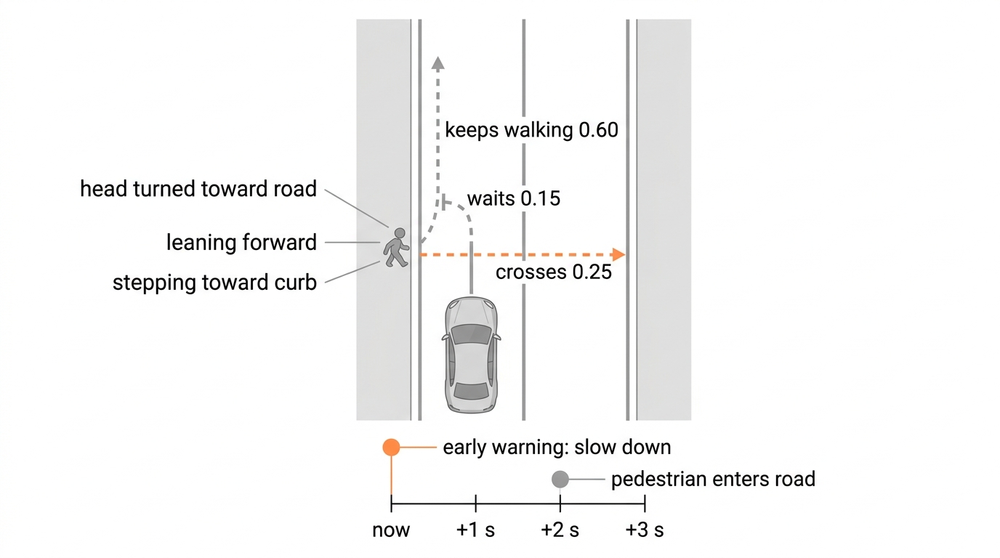

Can We Predict Dangerous Driving Scenarios Before They Happen?

In one sentence
Can an autonomous vehicle pick up the early signatures of an accident — a pedestrian's glance, a car's slight drift — and act seconds before the dangerous event actually happens?
What is the problem?
You are driving down a city street. A woman is standing on the pavement, phone in hand. She is not on a crossing. But she glances over her shoulder at the traffic, shifts her weight forward and takes a half-step towards the kerb. Without thinking, you lift your foot off the accelerator. Two seconds later she steps into the road — and you are already slow enough to stop comfortably.
Experienced drivers do this constantly. They react not to what is happening but to what is about to happen. A car ahead creeping towards the lane line, wheels turned slightly, is about to change lanes even before its indicator comes on. A ball rolling into the road may be followed by a child.
Most of an autonomous vehicle's perception stack is about the present: where are the objects now, how fast are they moving now. Prediction modules extend this forward, but mostly from position and velocity. This open problem asks whether a machine can read the subtle early cues — posture, gaze, heading, tiny changes in motion — and turn them into a warning before the danger becomes visible in the obvious signals.
Why does it matter?
In driving, time is everything. At city speeds a car covers more than ten metres every second. A warning that arrives one or two seconds earlier can be the difference between a gentle slowdown and an emergency stop — or between a near-miss and a collision.
- Earlier, softer reactions. If the car anticipates, it can ease off gently instead of braking hard, which is both safer and more comfortable.
- Vulnerable road users. Pedestrians and cyclists are the people most at risk, and also the hardest to predict from motion alone, because they can change direction almost instantly.
- Mixed traffic. As long as autonomous cars share roads with human drivers, they need to understand human intent, not just human positions.
- Handover time. If a human must take over (OP-12), they need seconds of warning, which only anticipation can give.
What would a solution look like?
Instead of predicting one future, the system predicts several possible futures, each with a probability, and asks how dangerous each one would be. The cues it uses go beyond where things are and how fast they move.

The useful cues fall into a few families:
| Cue | Example |
|---|---|
| Body language | Head turned towards traffic, leaning forward, a step towards the kerb, a cyclist looking over their shoulder. |
| Subtle vehicle motion | A slow drift towards the lane line, a small change of heading, a car slowing in an odd place. |
| Context | A bus stop, a school, a parked ice-cream van, a gap in traffic someone may try to use. |
| Interaction | Two road users heading for the same space; a driver who seems not to have seen a cyclist. |
The key idea: probability times consequence
A common mistake is to plan only for the most likely future. In Figure 1 the most likely outcome is that the pedestrian keeps walking. If the car plans only for that, it does nothing — and it is wrong one time in four.
The better question is: how likely is each future, and how bad would it be? A 25% chance of someone stepping in front of the car is far more important than a 60% chance of them walking along the pavement. So the goal is not just accurate prediction, but a risk estimate that combines probability and consequence, and that is calibrated enough to act on.
Why is it hard?
- The future is genuinely uncertain. People change their minds. No model can know for certain whether someone will cross; it can only estimate.
- The cues are small and noisy. A head turn may be a few pixels at 40 metres, in the rain, partly hidden behind a parked car.
- Dangerous events are rare. Driving datasets contain hours of normal driving for every few seconds of real danger, so models see very few examples of what they most need to learn.
- Everyone reacts to everyone. The pedestrian's decision depends on what the car does, and vice versa. Predicting one agent in isolation misses this.
- Too many warnings. If the car slows for every person near a kerb, it becomes unusable and annoying to the traffic behind it.
What has been tried so far
- Trajectory prediction from past motion — learn how people and vehicles usually move, and extend their recent paths forward. Modern versions output several possible futures, not just one.
- Social and interaction models — let the predicted paths of nearby agents influence each other, so that people avoid collisions with each other, follow groups, and so on.
- Pedestrian intention estimation — datasets and models that look at a pedestrian's appearance and pose to predict whether they will cross. This is very close to the example above.
- Map-aware prediction — use lanes, crossings and road layout to restrict which futures are plausible.
- Accident anticipation from dashcam video — learn, from real crash footage, to raise an alarm as early as possible before the collision.
- Classic safety measures — time-to-collision and similar quantities. Simple and well understood, but they react to motion that has already started.
What I think is still missing is a tight link between the early cues, a calibrated risk estimate, and a clear measure of how early the warning arrived. Many methods are judged by how close their predicted path is to the real one, not by whether they gave a useful warning in time.
How I would approach it
- Use public pedestrian-intention and trajectory datasets, and focus specifically on the moments just before a crossing or a lane change.
- Compare a motion-only predictor with one that also sees body pose, head direction and scene context, and measure how many seconds earlier each one notices the event.
- Turn the predictions into a risk score (probability times consequence) and check whether that score is calibrated — whether "25% risk" really means about one in four.
- Evaluate in simulation whether acting on the early warning reduces near-misses without making the car slow down all the time.
Questions still open
- How far ahead can danger be predicted reliably — one second, three, five — and does that horizon depend on the type of road user?
- Which early cues carry the most information: posture, gaze, motion, context, or their combination?
- How should "early" be measured so that different methods can be compared fairly? (a question shared with OP-01)
- How do we train for events that are rare, without simply simulating unrealistic ones?
- What should the car do when the prediction itself is uncertain — for example because the pedestrian is partly hidden? (see OP-12)
- How does the prediction change in a city or country where people behave differently, such as different jaywalking norms? (see OP-13)
This problem builds on recognising unfamiliar situations (OP-13) and deciding when not to trust oneself (OP-12), and it relies on healthy sensor inputs (OP-15).
Work on this together
I am looking for collaborators on this one. If you work on trajectory prediction, pedestrian behaviour, human pose estimation, driving datasets or risk modelling — or you simply have strong intuitions about how good human drivers anticipate — please get in touch.
Reach out about OP-14Further reading
- Alahi et al. — Social LSTM: Human Trajectory Prediction in Crowded Spaces (CVPR 2016)
- Gupta et al. — Social GAN: Socially Acceptable Trajectories with Generative Adversarial Networks (CVPR 2018)
- Rasouli, Kotseruba & Tsotsos — Are They Going to Cross? A Benchmark Dataset and Baseline for Pedestrian Crosswalk Behavior (ICCV Workshops 2017)
- Rasouli et al. — PIE: A Large-Scale Dataset and Models for Pedestrian Intention Estimation and Trajectory Prediction (ICCV 2019)
- Salzmann et al. — Trajectron++: Dynamically-Feasible Trajectory Forecasting with Heterogeneous Data (ECCV 2020)
- Chan et al. — Anticipating Accidents in Dashcam Videos (ACCV 2016)